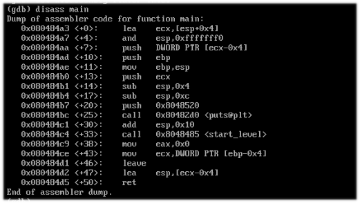
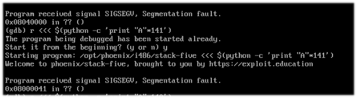

Esta prueba es más para aprender sobre shellcode, es una manera de sobreescribir un espacio reservado para meter una shell y ejecutarlo, pero primero es necesario encontrar una vulnerabilidad, vamos a revisar el código con GDB.
Nota importante: Cada vez que hago esto, coloco intrucciones a gdb que creo son muy necesarios, ya que cada que el debugger abre una aplicación, lo hace en un espacio de memoria relativa y al colocarle, unset env LINES y unset env COLUMNS, GDB muestra el uso de memoria real o muy cercano al que usa realmente la aplicación, facilitando la explotación de la vulnerabilidad.
Como podemos ver no hay información relevante.
Volvemos a encontrar la funcion "start_level", pero no hay nada más. Eso significa que hagamos la prueba de hacer un buffer overflow.
Revisamos el código y vemos que ahora es una espacio de 136 + ebp + ret, son 140 + 1 entonces "overflow".

Al parecer se logró, pero hay que ver donde inicia, ya que de ahí en adelante tenemos espacio libre para meter la shell, el espacio no es ilimitado, solo es la capacidad del buffer que se logró sobreescribir. Recuerda que había un espacio de 136, pero si quitamos ebp y ret, da 128, observa el código y obtendremos un char buffer[128].
Lo vamos debuggeando y siguiendo los registros de ESP, podemos restar o sumar hasta encontrar lo que necesitamos. El objetivo es encontrar el inicio de 0x41414141
Bien, usemos un metodo de "\xcc", que produce un SIGTRAP, que aparece cuando una ejecución cambia y el sistema lo detiene. Para lograr esto, puedes tomar unos bytes de los 140 que sobreescriben la pila, puedes hacer un calculo como haciendo un slide o simplemente tomar unos cuantos, en está ocasión solo tomaré 20 bytes
Listo. ¿pero qué más sigue?
Pues hacer una shellcode y colocar los bytes de la shell dentro de los 120 bytes sobrantes, lo complicado es que funcione, ya que por la arquitectura del sistema puede hacer que funcione o no la shell programada; a mi preferencia es usar Nasm.
Por ejemplo, si la shell tiene 20 bytes, entonces tomas 20 de los 120 y al final quedaría algo como, "\x90"*20 + "\x20bytesdelashellcode" + "A"*100 + "\x43\x43\x43\x43".
Si eres obervador, seguro te fijaste que puse \x90, esto es un NOP, que significa que la maquina debe de ignorar esos 20 NOPs y continuar su recorrido.